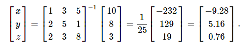

Scipy 线性代数(Linalg)
SciPy是使用优化的ATLAS LAPACK和BLAS库构建的。 它具有非常快的线性代数能力。 所有这些线性代数例程都需要一个可以转换为二维数组的对象。 这些例程的输出也是一个二维数组。
SciPy.linalg与NumPy.linalg
scipy.linalg包含numpy.linalg中的所有函数。 另外，scipy.linalg还有一些不在numpy.linalg中的高级函数。 在numpy.linalg上使用scipy.linalg的另一个优点是它总是用BLAS/LAPACK支持编译，而对于NumPy，这是可选的。 因此，根据NumPy的安装方式，SciPy版本可能会更快。
线性方程组
scipy.linalg.solve特征为未知的x，y值求解线性方程a * x + b * y = Z。
作为一个例子，假设需要解下面的联立方程。

要求解x，y，z值的上述方程式，可以使用矩阵求逆来求解向量，如下所示。

但是，最好使用linalg.solve命令，该命令可以更快，更稳定。
求解函数采用两个输入'a'和'b'，其中'a'表示系数，'b'表示相应的右侧值并返回解矩阵。
现在来看看下面的例子。
#importing the scipy and numpy packages
from scipy import linalg
import numpy as np
#Declaring the numpy arrays
a = np.array([[3, 2, 0], [1, -1, 0], [0, 5, 1]])
b = np.array([2, 4, -1])
#Passing the values to the solve function
x = linalg.solve(a, b)
#printing the result array
print(x)
查找一个行列式
方阵A的行列式通常表示为| A |并且是线性代数中经常使用的量。 在SciPy中，这是使用det()函数计算的。 它将矩阵作为输入并返回一个标量值。
下面来看看一个例子。
#importing the scipy and numpy packages
from scipy import linalg
import numpy as np
#Declaring the numpy array
A = np.array([[1,2],[3,4]])
#Passing the values to the det function
x = linalg.det(A)
#printing the result
print(x)
特征值和特征向量
特征值 - 特征向量问题是最常用的线性代数运算之一。 我们可以通过考虑以下关系式来找到方阵(A)的特征值(λ)和相应的特征向量(v)
Av = λv
scipy.linalg.eig从普通或广义特征值问题计算特征值。 该函数返回特征值和特征向量。
让我们来看看下面的例子。
#importing the scipy and numpy packages
from scipy import linalg
import numpy as np
#Declaring the numpy array
A = np.array([[1,2],[3,4]])
#Passing the values to the eig function
l, v = linalg.eig(A)
#printing the result for eigen values
print(l)
#printing the result for eigen vectors
print(v)
奇异值分解
奇异值分解(SVD)可以被认为是特征值问题扩展到非矩阵的矩阵。
scipy.linalg.svd将矩阵'a'分解为两个酉矩阵'U'和'Vh'，以及一个奇异值(实数，非负)的一维数组's'，使得a == U * S * Vh，其中'S'是具有主对角线's'的适当形状的零点矩阵。
让我们来看看下面的例子。参考以下代码 -
#importing the scipy and numpy packages
from scipy import linalg
import numpy as np
#Declaring the numpy array
a = np.random.randn(3, 2) + 1.j*np.random.randn(3, 2)
#Passing the values to the eig function
U, s, Vh = linalg.svd(a)
# printing the result
print(U, Vh, s)